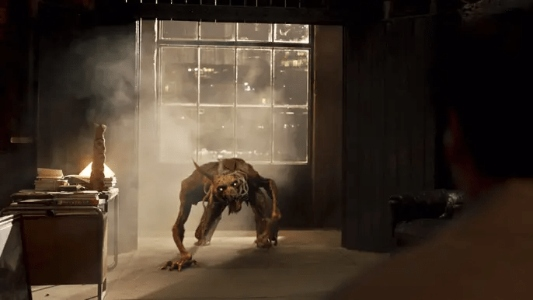
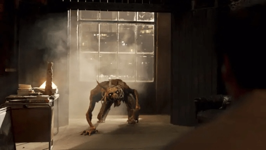

.jpg)
Bad CGI Moments
 

As we start with the first coverage on how Marvel has not risen in hopes to build what was the future of Marvel, things did not look good as we take a look at CGI. As shown in the photos above, this was one of many issues that Marvel dealt with at the production level and the VFX effects, as you can see in the photo. Now, of course, budget is very important for the effects of the movie, and they did receive high budgets for the film, However, it didn't help, and Marvel lost money for the production level as the box office money was lower than the budget that was given. After this project was considered a flop by reviewers, many thought that Marvel could bounce back and have a better attempt at the visual effects. That turned out not to be the case, and more examples have appeared in all sorts of shows and films.
In the first photo, this photo was from the film "Black Widow" now this movie had some disadvtanges as it was during the pandemic and it was forced to release onto Disney Plus but you can tell the quality of that scene, it just looked blurry and it wasn't clear focused at all. We next look at a scene from Doctor Strange: The Multiverse of Madness as we see Doctor Strange trying to talk to the protectors of the multiverse, but the stage he was on clearly looked like it didn't cover the stage and looked like a soundstage.
The third photo, is from the TV series "MoonKnight," as we see the picture of one of monsters that appear in the show, now it may seem okay but the rendering on the monster is what makes it standout not in the right way and it may just look like the monster was added onto the scene as like a photo or the background is the photo and it doesn't have a clear factor to see that it's in the actual building itself. Lastly, we have a scene from "Thor: Love and Thunder" as we see a kid's hologram that is trying to send a message to Thor to not give up and to save them, after they were captured. Now, this scene was fixed later on, but before it just looked like it was slowly fading away, and the quality of the image wasn't at its highest peak.
So clearly, despite having a good budget for the films, after marketing as well, special effect and CGI is still a recurring issue for Marvel.
.jpg)